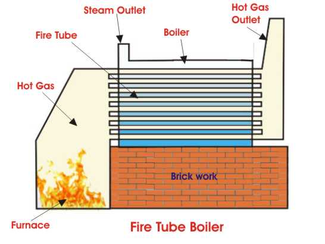

• Types
Working Principle of Horizontal Return Fire Tube Boiler
Advantages of Fire Tube Boiler
• Disadvantages
Fire tube boiler is one of the most basic types of boiler and the design is also very old. It was popular in 18th century. It was mainly used for steam locomotive engines.
Operation of Fire Tube Boiler
Operation of fire tube boiler is as simple as its construction. In fire tube boiler, the fuel is burnt inside a furnace. The hot gases produced in the furnace then passes through the fire tubes. The fire tubes are immersed in water inside the main vessel of the boiler. As the hot gases are passed through these tubes, the heat energy of the gasses is transferred to the water surrounds them. As a result steam is generated in the water and naturally comes up and is stored upon the water in the same vessel of fire tube boiler. This steam is then taken out from the steam outlet for utilizing for required purpose. The water is fed into the boiler through the feed water inlet.
As the steam and water is stored is the same vessel, it is quite difficult to produce very high pressure steam from. General maximum capacity of this type of boiler is 17.5 kg/cm2 and with a capacity of 9 Metric Ton of steam per hour. In a fire tube boiler, the main boiler vessel is under pressure, so if this vessel is burst there will be a possibility of major accident due to this explosion.
Types of Fire Tube Boiler
According to the location of furnace there are two types of fire tube boiler and these are external furnace and internal furnace type.
There are mainly three types of external furnace fire tube boiler.
1) Horizontal return tubular fire tube boiler.
2) Short fire box fire tube boiler.
3) Compact fire tube boiler.
There are also two types of internal furnace fire tube boiler
1) Horizontal tubular.
2) Vertical tubular fire tube boiler.
Working Principle of Horizontal Return Fire Tube Boiler
Horizontal return fire tube boiler is most suitable for low capacity thermal power plant. The main constructional features of this boiler are one big size steam drum which lies horizontally upon supporting structures. There are numbers of fire tubes come from furnace and also aligned horizontally inside the drum. When the drum is filled with water these tubes are submerged in water.

The fuels (normally coal) burnt in the furnace and combustible gasses move into the fire tubes, travel through these tubes from rear to front of the boiler drum and finally the gases come into the smoke box. The hot gasses in the tubes under water transfer heat to the water via the tube walls. Due to this heat energy steam bubbles are created and come upon the water surface. As the amount of steam is increased in that closed drum, steam pressure inside the drum increases which increase significantly the boiling temperature of the water and hence rate of production of steam is reduced. In this way a fire tube boiler controls its own pressure. In other words this is a self pressure controlled boiler.
Advantages of Fire Tube Boiler
1) Compact in construction.
2) Fluctuation of steam demand can be met easily.
3) Cheaper than water tube boiler.
Disadvantages of Fire Tube Boiler
1) Due to large water the required steam pressure rising time quite high.
2) Output steam pressure cannot be very high since the water and steam are kept in same vessel.
3) The steam received from fire tube boiler is not very dry.
4) In a fire tube boiler, the steam drum is always under pressure, so there may be a chance of huge explosion which resulting to severe accident.
 by
by